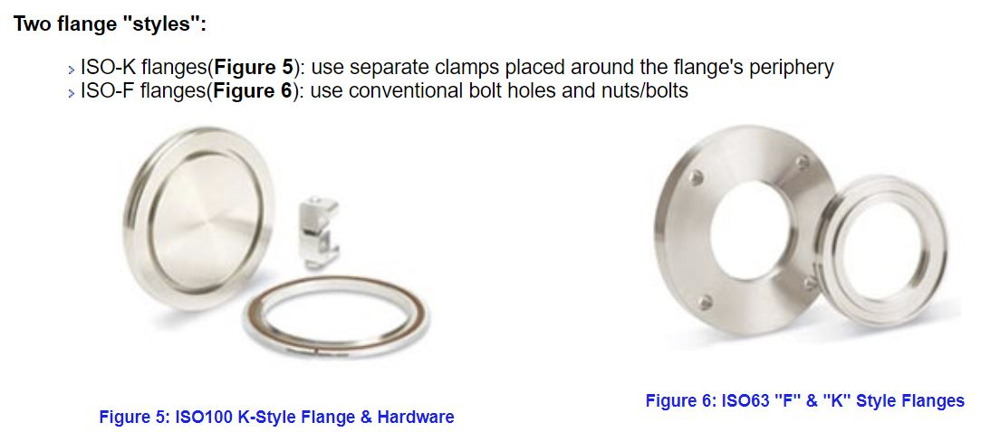
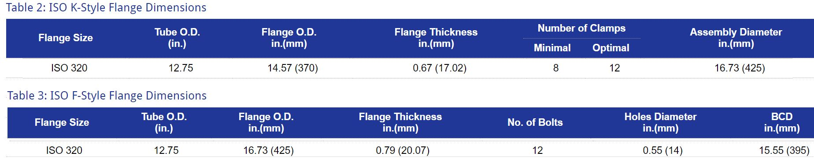

Ref : https://www.classe.cornell.edu/~dms79/D-lineNotes/components/ISO%20Flanges-TechnicalNotes.htm
ISO flanges conform to the vacuum flange standards issued by the International Standards Organization (ISO).
They share the same underlying principle as the QF (KF or NW) flange series in that two smooth-faced sexless flanges clamp together with a sealing device between them. Each flange face has a counter-bore into which fits a metal Centering Ring with an elastomeric O-ring around its outer diameter.
The centering ring has two roles: first to align the flanges; and second to prevent the O-ring being pushed in by the external atmospheric pressure when the joint is under vacuum.

